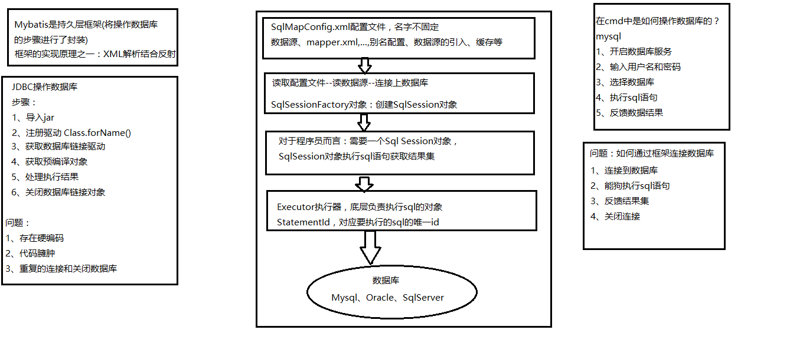
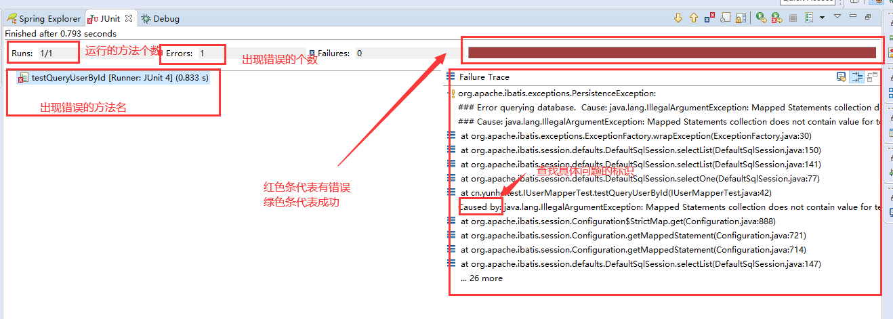
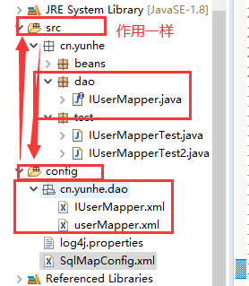
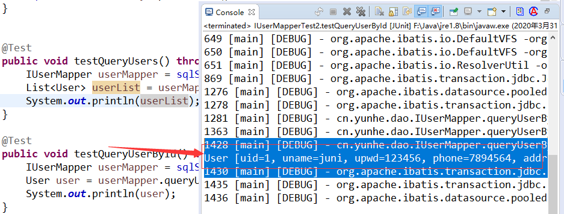
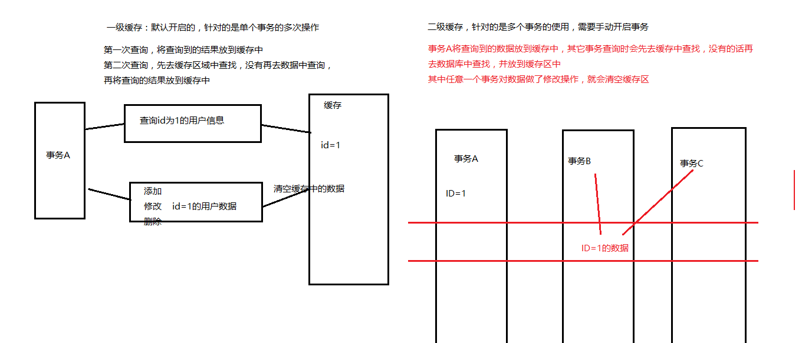
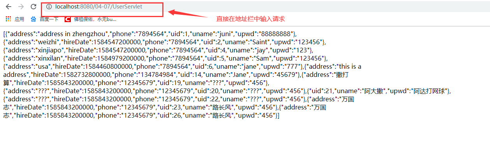
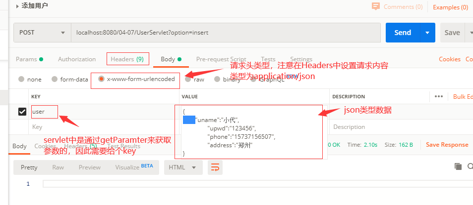
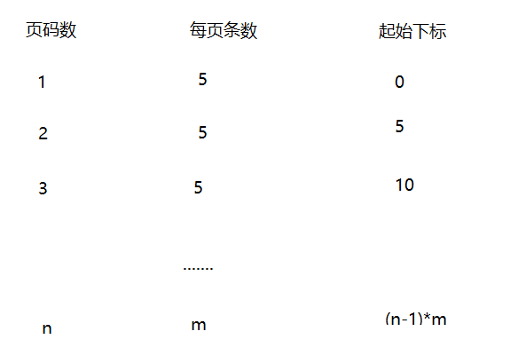
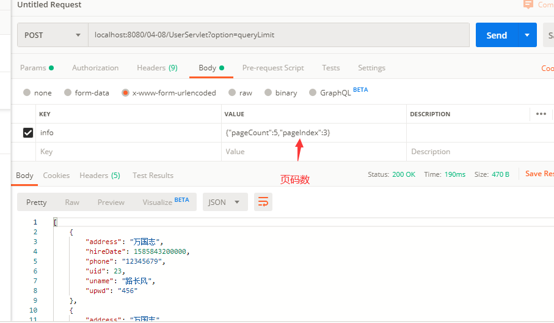
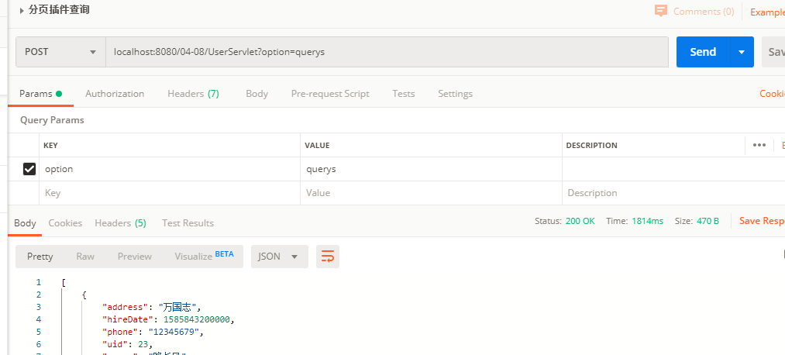

Mybatis是Apache下的一个开源的免费的半自动化的ORM框架，前身名叫IBatis
优势：简化了对数据库的操作，让程序员专注于对sql的编写，不再将大量的时间放在业务逻辑上
//模糊查询时，条件的不同会有不同的业务，此处的业务代码会非常的繁琐，可以使用Mybatis中的动态sql处理String sql = "select * from t_user limit ?,?";if(user0!=null) { if(user0.getUname()!=null) { sql = "select * from t_user where uname like concat('%',?,'%') limit ?,?"; ps = conn.prepareStatement(sql); ps.setString(1, user0.getUname()); ps.setInt(2, pageCount*(pageIndex-1)); ps.setInt(3, pageCount); }}else { ps = conn.prepareStatement(sql); ps.setInt(1, pageCount*(pageIndex-1)); ps.setInt(2, pageCount);}ORM：持久化，例如：数据的存储等
半自动化：程序员可以自己编写对应的sql
问题：随着社会的发展及医疗等等的提升，现在社会人口的老龄化日趋严重、消费的方式等等的多样化，每个人对应的数据量也就越来越多，对应的需求方式也就更加的多样化
对比Hibernate框架，全自动的ORM框架，它的sql是自动生成的，程序员不能自己控制
面试题:Hibernate和Mybatis的区别---框架选型的时候为什么要选Mybatis
问题1：在使用JDBC操作时，需要频繁的链接和关闭数据库
方案：使用数据库连接池进行管理 c3p0、druid等
硬编码和软编码的区别：
xxxxxxxxxxint a = 1;int b = 2;if(a == 2){}//如果用到的是常量值--硬编码if(a == b){}//使用的两个变量的值都是可变的---软编码问题2：存在大量的硬编码--如果sql存在问题，那就需要修改sql，只要修改了Java的代码，那就需要重新编译
方案：将所有的sql语句放在配置文件中(xml)
问题3：结果集处理存在大量的重复性工作，不利于后期的维护
方案：指定映射规则，将查询的结果集与实体类中的属性进行映射
问题4：条件的不同，会带来不同的业务需求，不利于后期的维护
方案：使用动态sql
面试题：Mybatis的实现原理
利用反射及xml解析实现

面试题：简单描述下Mybatis的执行流程
回答：mybatsi是一个半自动化的ORM框架，通过SqlMapConfig.xml文件配置数据源和映射文件等，然后通过SqlSessionFactory对象创建SqlSession对象，执行sql语句，处理结果集
步骤：
1、导入jar包 mybatis.jar mysql-connector-java.jar log4j.jar
2、创建配置文件 配置数据源、加载映射文件
3、三层结构 对应要实现的业务
4、创建映射文件 具体要实现的功能对应的sql语句
xxxxxxxxxx//查询所有的用户public void testQueryUsers() throws IOException { //1、自动从资源文件的根目录下进行查找 InputStream inputStream = Resources.getResourceAsStream("SqlMapConfig.xml"); //2、创建SqlSessionFactory对象 SqlSessionFactory factory = new SqlSessionFactoryBuilder().build(inputStream); //3、创建SqlSession对象 SqlSession sqlSession = factory.openSession(); //执行对应的功能 List<User> userList = sqlSession.selectList("test.queryUsers"); System.out.println(userList); //4、关闭sqlSession对象 sqlSession.close(); inputStream.close();} xxxxxxxxxx//查询指定ID的用户public void testQueryUserById() throws IOException { //1、自动从资源文件的根目录下进行查找 InputStream inputStream = Resources.getResourceAsStream("SqlMapConfig.xml"); //2、创建SqlSessionFactory对象 SqlSessionFactory factory = new SqlSessionFactoryBuilder().build(inputStream); //3、创建SqlSession对象 SqlSession sqlSession = factory.openSession(); //执行功能 参数一：指定要执行的映射文件中对应的sql，参数二：要传递的参数值 User user = sqlSession.selectOne("test.queryUserById", 1); System.out.println(user); //4、关闭sqlSession对象 sqlSession.close(); inputStream.close();} selectOne是查询单条语句使用的，selectList用于查询多条语句，会自动识别返回的数据条数。
可以使用selectList接收selectOne的结果，但是不能使用selectOne去接收selectList的结果
JUnit：单元测试，可以单独运行指定的方法，不需要通过主函数，通常用于测试某个功能模块
使用：将JUnit的jar包添加到项目中
1、下载JUnit的jar包放到lib目录中右键关联到项目中
2、在项目中右键添加jar包，找到JUnit选择JUnit4添加到项目中即可
注意：方法不能静态的、方法不能有参数

xxxxxxxxxx//@Before修饰的方法，会在所有@Test方法执行前执行public void before() throws IOException { //1、自动从资源文件的根目录下进行查找 inputStream = Resources.getResourceAsStream("SqlMapConfig.xml"); //2、创建SqlSessionFactory对象 SqlSessionFactory factory = new SqlSessionFactoryBuilder().build(inputStream); //3、创建SqlSession对象 sqlSession = factory.openSession();}//@After修饰的方法会在所有@Test方法执行完后执行public void close() throws IOException { //关闭连接 sqlSession.close(); inputStream.close();}
x//注意点：对于增删改的操作因为修改了数据库的内容，所以需要进行事务提交，保证数据的一致性//添加用户public void testInsertUser() throws IOException { //1、自动从资源文件的根目录下进行查找 InputStream inputStream = Resources.getResourceAsStream("SqlMapConfig.xml"); //2、创建SqlSessionFactory对象 SqlSessionFactory factory = new SqlSessionFactoryBuilder().build(inputStream); //3、创建SqlSession对象 SqlSession sqlSession = factory.openSession(); //执行添加的动作 参数一：指定对应要执行的sql，参数二：需要传递的参数 User user = new User(); user.setUname("郭某某"); user.setPhone("12378945699"); user.setAddress("郑州市二七区"); user.setUpwd("110"); user.setHireDate(new Date()); int result = sqlSession.insert("test.insertUser", user); System.out.println("执行结果---->"+result); //提交事务 sqlSession.commit(); //关闭sqlsession和流对象 sqlSession.close(); inputStream.close();} xxxxxxxxxxpublic void testUpdateUser() throws IOException { //1、自动从资源文件的根目录下进行查找 InputStream inputStream = Resources.getResourceAsStream("SqlMapConfig.xml"); //2、创建SqlSessionFactory对象 SqlSessionFactory factory = new SqlSessionFactoryBuilder().build(inputStream); //3、创建SqlSession对象 SqlSession sqlSession = factory.openSession(); //设置要修改的值 User user = new User(); user.setUid(22); user.setPhone("78945612311"); user.setUpwd("120"); user.setAddress("the people in the earth"); int result = sqlSession.update("test.updateUser", user); System.out.println("执行结果--->"+result); //提交事务 sqlSession.commit(); //关闭连接 sqlSession.close(); inputStream.close(); xxxxxxxxxxpublic void testDelUser() throws IOException { //1、自动从资源文件的根目录下进行查找 InputStream inputStream = Resources.getResourceAsStream("SqlMapConfig.xml"); //2、创建SqlSessionFactory对象 SqlSessionFactory factory = new SqlSessionFactoryBuilder().build(inputStream); //3、创建SqlSession对象 SqlSession sqlSession = factory.openSession(); //执行对应的sql int result = sqlSession.delete("test.delUser", 22); System.out.println("执行结果--->"+result); //提交事务 sqlSession.commit(); //关闭连接 sqlSession.close(); inputStream.close();} xxxxxxxxxx<typeAliases> <!-- 如果有多个实体类需要定义别名，那就写多个typeAlias type指定类型 alias：指定对应的别名 --> <!-- <typeAlias type="cn.yunhe.beans.User" alias="user"/> --> <!-- 为了方便，也可以批量设置别名 指定要设置别名的实体类所在的包即可，它们的别名默认是类名(首字母不区分大小写 user/User) --> <package name="cn.yunhe.beans"/></typeAliases>思考问题：使用框架后，如何做到将查询出来的结果字段与对应的实体类中的属性进行一对一的映射？
前提是：需要知道实体类中到底有哪些属性存在(反射)，通常实体类中的属性名和数据库中的字段名是保持一致的，这样的话，查询到的数据就可以直接进行映射，如果说查询到的字段(别名)和实体类中的属性名不一致，此时可以使用resultMap做映射关系处理(后面讲)
原始Mybatis开发中存在的问题：
1、存在硬编码的问题
2、代码臃肿问题
3、调用方法及参数类型不清晰
mapper代理开发的要求：
a、映射文件中的id值要和接口中的方法名保持一致
b、映射文件中的参数类型要和接口中的对应方法的参数列表一致
c、映射文件中的返回值类型要和接口中对应的方法的返回值类型保持一致
在mapper代理的基础上使用了批量加载映射文件的操作，需要再满足以下要求
d、映射文件的名字要和接口名一样
e、映射文件要和接口在同一个包下
注意：多个mapper文件存在时，namespace的值不能相同，通常用接口的全限定名来作为唯一标识
xxxxxxxxxx<mapper namespace="cn.yunhe.dao.IUserMapper"><!--id:作为唯一标识parameterType:指定参数的类型,基本数据类型都支持，可以直接用,只能写一个参数类型resultType:指定返回值的类型-包名+类名注意点：sql语句的结尾不能有分号#{val} 占位符,参数名可以任意写。如果参数类型是引用数据类型(对象),参数名要和实体类中的属性名对应--><select id="queryUsers" resultType="User">select uid,uname,upwd,phone,address,hireDate from t_user</select><!-- 查询指定ID的用户信息 --><select id="queryUserById" parameterType="int" resultType="user">select uid,uname,upwd,phone,address,hireDate from t_user where uid=#{uid}</select></mapper>
xxxxxxxxxxpublic void testQueryUsers() throws IOException { IUserMapper userMapper = sqlSession.getMapper(IUserMapper.class); List<User> userList = userMapper.queryUsers(); System.out.println(userList);}public void testQueryUserById() throws IOException { IUserMapper userMapper = sqlSession.getMapper(IUserMapper.class); User user = userMapper.queryUserById(1); System.out.println(user);}批量加载为了目录更加清晰，可以再创建一个资源文件夹与src的功能一样，用于存放相关的配置文件

测试结果

需求：按照输入的用户名进行模糊匹配
xxxxxxxxxx<!-- 模糊查询 面试题：在Mybatis中#{}和${}的区别 #{}代表占位符 ${value}代表拼接 引起sql注入的问题，不安全；${}中的参数名只能写value 实体类中的属性都是私有化的，外界是不允许直接调用的，那么为什么在映射文件中可以直接写属性名？ 映射文件中在使用对应实体类中的属性时，其实是通过其对应的get方法来获取值的 --><select id="queryUserLikeName" parameterType="java.lang.String" resultType="user"> <!-- select uid,uname,upwd,phone,address,hireDate from t_user where uname like #{uname} --> <!-- select uid,uname,upwd,phone,address,hireDate from t_user where uname like '%${value}%' --> select uid,uname,upwd,phone,address,hireDate from t_user where uname like concat('%',#{uname},'%')</select>问题：当需要传递多个参数时，Mybatis能否直接接收多个参数？
答案：Mybatis不能直接接收多个参数，但是可以将多个参数包装成一个实体类传递
需求：查询订单信息附带用户信息
xxxxxxxxxxcreate table t_items( item_id int primary key auto_increment, item_name varchar(20) not null, item_price double(10,2) not null, item_count int not null);insert into t_items(item_name,item_price,item_count) values('卫龙辣条','2.5',10);insert into t_items(item_name,item_price,item_count) values('雪花酥','20',3);insert into t_items(item_name,item_price,item_count) values('巧乐兹','3',1);insert into t_items(item_name,item_price,item_count) values('藤椒火腿肠','9',2);insert into t_items(item_name,item_price,item_count) values('呀!土豆','2.5',2);insert into t_items(item_name,item_price,item_count) values('江米条','5',1);insert into t_items(item_name,item_price,item_count) values('唐僧肉','0.1',10);create table t_orders( order_id varchar(20) not null unique, order_create_time datetime not null, order_status int not null, uid int not null);insert into t_orders values('X123456789','2020-04-01 12:10:20',0,1);insert into t_orders values('X123456790','2020-04-01 12:13:20',1,1);insert into t_orders values('X123456793','2020-04-03 11:13:20',1,2);insert into t_orders values('X123456820','2020-04-02 12:20:20',2,5);insert into t_orders values('X123456850','2020-04-05 14:13:20',1,4);select orders.*,users.* from t_orders orders left join t_user users on orders.uid=users.uid; xxxxxxxxxx<!-- 方式一：在Order中包含User --><!-- resultMap:处理映射关系 type：返回的类型 id：唯一标识，xml文件中可以有多个映射关系 --><resultMap type="order2" id="queryOrders2ResultMap"> <!-- 通常用于主键 column指的是查询返回的字段名 property指的是实体类中要进行映射的字段名--> <id column="order_id" property="orderId"/> <result column="order_create_time" property="orderCreateTime"/> <result column="order_status" property="orderStatus"/> <result column="uid" property="uid"/> <!-- 一对一的关系 property:要映射的属性 javaType:该属性对应的类型(全限定名) --> <association property="user" javaType="User"> <id column="uid" property="uid"/> <result column="uname" property="uname"/> <result column="phone" property="phone"/> <result column="address" property="address"/> <result column="hireDate" property="hireDate"/> </association></resultMap><select id="queryOrders2" resultMap="queryOrders2ResultMap"> select orders.*, users.* from t_orders orders left join t_user users on orders.uid=users.uid;</select> xxxxxxxxxx<!-- 方式二：自定义实体类，包含了Order和User--><resultMap type="custom" id="queryOrders3ResultMap"> <association property="order" javaType="Order"> <id column="order_id" property="order_id"/> <result column="order_create_time" property="order_create_time"/> <result column="order_status" property="order_status"/> <result column="uid" property="uid"/> </association> <association property="user" javaType="User"> <id column="uid" property="uid"/> <result column="uname" property="uname"/> <result column="phone" property="phone"/> <result column="address" property="address"/> <result column="hireDate" property="hireDate"/> </association></resultMap><select id="queryOrders3" resultMap="queryOrders3ResultMap"> select orders.*, users.* from t_orders orders left join t_user users on orders.uid=users.uid;</select>用户和订单之间是一对多的关系
需求：查询指定用户的信息及其所有的订单信息
xxxxxxxxxxselect users.*,orders.* from t_user users,t_orders orders where users.uid=orders.uid and users.uid=#{uid} xxxxxxxxxx<resultMap type="user" id="queryUserOrdersResultMap"> <id column="uid" property="uid"/> <result column="uname" property="uname"/> <result column="upwd" property="upwd"/> <result column="phone" property="phone"/> <result column="address" property="address"/> <result column="hireDate" property="hireDate"/> <!--collection 代表集合 ofType指定类型--> <collection property="orderList" ofType="order"> <id column="order_id" property="order_id"/> <result column="order_create_time" property="order_create_time"/> <result column="order_status" property="order_status"/> </collection></resultMap><select id="queryUserOrders" parameterType="int" resultMap="queryUserOrdersResultMap"> select users.*,orders.* from t_user users,t_orders orders where users.uid=orders.uid and users.uid=#{uid}</select> xxxxxxxxxxpublic class User { /** * 用户ID */ private int uid; /** * 用户名 */ private String uname; /** * 密码 */ private String upwd; /** * 联系方式 */ private String phone;; /** * 家庭住址 */ private String address; /** * 入职日期 */ private Date hireDate; /** * 关联的订单信息 */ private List<Order> orderList; public List<Order> getOrderList() { return orderList; } public void setOrderList(List<Order> orderList) { this.orderList = orderList; } public int getUid() { return uid; } public void setUid(int uid) { this.uid = uid; } public String getUname() { return uname; } public void setUname(String uname) { this.uname = uname; } public String getUpwd() { return upwd; } public void setUpwd(String upwd) { this.upwd = upwd; } public String getPhone() { return phone; } public void setPhone(String phone) { this.phone = phone; } public String getAddress() { return address; } public void setAddress(String address) { this.address = address; } public Date getHireDate() { return hireDate; } public void setHireDate(Date hireDate) { this.hireDate = hireDate; } public String toString() { return "User [uid=" + uid + ", uname=" + uname + ", upwd=" + upwd + ", phone=" + phone + ", address=" + address + ", hireDate=" + hireDate + ", orderList=" + orderList + "]"; } }订单和商品之间的关系是多对多，一个订单中可以包含多个商品，一个商品可以存在于多个订单中
需求：查询用户及订单信息关联查询商品信息
xxxxxxxxxxcreate table t_order_details( detail_id int primary key auto_increment, orders_id varchar(20) not null, items_id int not null);insert into t_order_details(orders_id,items_id) values('X123456789',3);insert into t_order_details(orders_id,items_id) values('X123456789',2);insert into t_order_details(orders_id,items_id) values('X123456789',7);insert into t_order_details(orders_id,items_id) values('X123456820',5);insert into t_order_details(orders_id,items_id) values('X123456820',3);insert into t_order_details(orders_id,items_id) values('X123456850',4); xxxxxxxxxxselect users.*,orders.*,items.* from t_user users,t_orders orders where users.uid=orders.uid and users.uid=#{uid}--先找到订单和订单详情之间的数据select orders.*,detail.* from t_orders orders,t_order_details detail where orders.order_id = detail.orders_id;--在查找订单详情和商品之间的关系select orders.*,detail.*,items.* from t_orders orders,t_order_details detail,t_items items where orders.order_id = detail.orders_id and detail.items_id=items.item_id;--再关联用户信息select users.*,orders.*,items.* from t_user users,t_orders orders,t_order_details detail,t_items items where users.uid=orders.uid and orders.order_id = detail.orders_id and detail.items_id=items.item_id and users.uid=#{uid}; xxxxxxxxxx<resultMap type="user" id="queryUserOrdersItemsResultMap"> <id column="uid" property="uid"/> <result column="uname" property="uname"/> <result column="upwd" property="upwd"/> <result column="phone" property="phone"/> <result column="address" property="address"/> <result column="hireDate" property="hireDate"/> <collection property="orderList" ofType="order"> <id column="order_id" property="order_id"/> <result column="order_create_time" property="order_create_time"/> <result column="order_status" property="order_status"/> <collection property="itemList" ofType="item"> <id column="item_id" property="item_id"/> <result column="item_name" property="item_name"/> <result column="item_price" property="item_price"/> <result column="item_count" property="item_count"/> </collection> </collection></resultMap><select id="queryUserOrdersItems" parameterType="int" resultMap="queryUserOrdersItemsResultMap"> select users.*,orders.*,items.* from t_user users,t_orders orders,t_order_details detail,t_items items where users.uid=orders.uid and orders.order_id = detail.orders_id and detail.items_id=items.item_id and users.uid=#{uid};</select>使用extends关键字简化代码，注意：引用的是同级关系(字段)的映射
xxxxxxxxxx<!-- 用户信息映射作为公共的区域 --><resultMap type="user" id="userBaseResult"> <id column="uid" property="uid"/> <result column="uname" property="uname"/> <result column="upwd" property="upwd"/> <result column="phone" property="phone"/> <result column="address" property="address"/> <result column="hireDate" property="hireDate"/></resultMap><!-- 映射用户中的订单信息 --><resultMap type="user" id="queryUserOrdersResultMap" extends="userBaseResult"> <collection property="orderList" ofType="order"> <id column="order_id" property="order_id"/> <result column="order_create_time" property="order_create_time"/> <result column="order_status" property="order_status"/> </collection></resultMap><select id="queryUserOrders" parameterType="int" resultMap="queryUserOrdersResultMap"> select users.*,orders.* from t_user users,t_orders orders where users.uid=orders.uid and users.uid=#{uid}</select><!-- 映射订单中的上品信息 --><resultMap type="user" id="queryUserOrdersItemsResultMap" extends="userBaseResult"> <collection property="orderList" ofType="order"> <id column="order_id" property="order_id"/> <result column="order_create_time" property="order_create_time"/> <result column="order_status" property="order_status"/> <collection property="itemList" ofType="item"> <id column="item_id" property="item_id"/> <result column="item_name" property="item_name"/> <result column="item_price" property="item_price"/> <result column="item_count" property="item_count"/> </collection> </collection></resultMap><select id="queryUserOrdersItems" parameterType="int" resultMap="queryUserOrdersItemsResultMap"> select users.*,orders.*,items.* from t_user users,t_orders orders,t_order_details detail,t_items items where users.uid=orders.uid and orders.order_id = detail.orders_id and detail.items_id=items.item_id and users.uid=#{uid};</select>什么是sql片段？
将在xml文件中频繁使用的字段，使用sql标签进行封装，在需要使用的抵用通过include标签引用即可
为什么要使用sql片段？
1、在同一个xml文件中会频繁的使用到相同的字段，此时需要进行封装抽离
2、需要使用另一个xml文件中的公共的字段或sql
xxxxxxxxxx<!--userMapper中的--><!-- sql片段 --><sql id="baseUser"> users.uid, users.uname, users.upwd, users.phone, users.address, users.hireDate</sql><!--orderMapper中的--><sql id="baseOrder"> orders.order_id, orders.order_create_time, orders.order_status, orders.uid</sql> xxxxxxxxxx<select id="queryUsers" resultType="User"> select <!-- refid:要引用的片段对应的id值 --> <include refid="cn.yunhe.dao.IUserMapper.baseUser"/> from t_user users</select><select id="queryUserOrders" parameterType="int" resultMap="queryUserOrdersResultMap"> select <include refid="baseUser"/>, <include refid="cn.yunhe.dao.IOrderMapper.baseOrder"/> from t_user users,t_orders orders where users.uid=orders.uid and users.uid=#{uid}</select><select id="queryUserOrdersItems" parameterType="int" resultMap="queryUserOrdersItemsResultMap"> select <include refid="baseUser"/>, <include refid="cn.yunhe.dao.IOrderMapper.baseOrder"/>, items.item_id, items.item_name, items.item_price, items.item_count from t_user users,t_orders orders,t_order_details detail,t_items items where users.uid=orders.uid and orders.order_id = detail.orders_id and detail.items_id=items.item_id and users.uid=#{uid};</select>什么是动态SQL？
可以动态的拼接sql语句 ，并且可以使用逻辑判断
需求：根据不同的查询条件，搜索数据
xxxxxxxxxx<!-- 模糊查询 --><select id="queryUserLike" parameterType="user" resultType="user"> select <include refid="baseUser"/> from t_user users <!-- where会自动去掉第一个and --> <where> <if test="uname!=null and !uname.isEmpty()"> uname like concat('%',#{uname},'%') </if> <if test="phone!=null and !phone.isEmpty()"> and phone like concat('%',#{phone},'%') </if> </where> </select>测试结果
xxxxxxxxxxpublic void testQueryUsersLike() { IUserMapper userMapper = sqlSession.getMapper(IUserMapper.class); User user = new User(); user.setUname("j"); user.setPhone("789"); List<User> userList = userMapper.queryUserLike(user); System.out.println(userList);}需求：批量删除
xxxxxxxxxxdelete from t_user where id in(?,?,?,?); xxxxxxxxxx<!-- 批量删除 --><delete id="delUsers"> delete from t_user where uid in <!-- for(int i=0;i<array.length;i++){id = array[i]} collection:指定要遍历的对象 item:遍历中的当前对象 open：开始拼接 close：结束时的拼接 separator：遍历过程中的拼接 如果传递的是数组就用array，如果是List集合就用list --> <foreach collection="array" item="id" open="(" close=")" separator=","> #{id} </foreach></delete>应用场景：用户注册成功后直接算是登录成功的状态，在个人信息或其他页面需要使用到用户的信息，那么此时就需要通过id来获取，或者注册成功后将用户信息携带过去。
总结：在添加数据后获取到当前添加的这条数据的主键ID
xxxxxxxxxx<insert id="insertUser" parameterType="user"> <!-- 自增主键：先插入数据才有主键ID selectKey 用于在添加时查询当前语句生成的主键ID order：指定查询主键的sql在添加语句之前还是之后去执行 last_insert_id():用于获取当前添加的语句生成的主键ID keyProperty：指定将查询到的主键值给哪个属性 resultType:指定返回值的类型 非自增型的通常使用的是UUID(字符串)生成 使用uuid来作为主键的话，先生成主键然后再插入数据 --> <selectKey order="AFTER" keyProperty="uid" resultType="int"> select LAST_INSERT_ID() </selectKey> <!-- <selectKey order="BEFORE" keyProperty="uid" resultType="java.lang.String"> select uuid() </selectKey> --> insert into t_user(uname,upwd,phone,address,hireDate) values(#{uname},#{upwd},#{phone},#{address},#{hireDate})</insert>测试代码
xxxxxxxxxxpublic void testInsertUser() throws IOException { InputStream inputStream = Resources.getResourceAsStream("SqlMapConfig.xml"); SqlSessionFactory factory = new SqlSessionFactoryBuilder().build(inputStream); SqlSession sqlSession = factory.openSession(); IUserMapper userMapper = sqlSession.getMapper(IUserMapper.class); //创建User对象设置要添加的信息 User user = new User(); //给user对象设置一个uid user.setUid(100); user.setUname("路长风"); user.setUpwd("456"); user.setAddress("万国志"); user.setPhone("12345679"); user.setHireDate(new Date()); userMapper.insertUser(user); System.out.println(user); //增删改都需要提交事务 sqlSession.commit(); sqlSession.close(); inputStream.close();}测试结果
xxxxxxxxxxUser [uid26, uname路长风, upwd456, phone12345679, address万国志, hireDateFri Apr 03 10:03:43 CST 2020, orderListnull]

一级缓存
在Mybatis中一级缓存是默认开启的
同一个事务，查询uid=1的数据，先从缓存区中查找，如果没有就去数据库中查找，将数据存储到缓存区中，
当该事务再次使用uid=1的数据时，会先从缓存区中查找，如果在查找之前修改了uid=1的数据，那么会清除掉缓存区中的数据，再次从数据库中查找后放到缓存区
xxxxxxxxxxpublic void testQueryUserById2() { SqlSession sqlSession = factory.openSession(); IUserMapper userMapper = sqlSession.getMapper(IUserMapper.class); User user1 = userMapper.queryUserById(1); System.out.println(user1); //修改动作 IUserMapper userMapper3 = sqlSession.getMapper(IUserMapper.class); User user = new User(); user.setUid(1); user.setUpwd("88888888"); userMapper3.updateUser(user); sqlSession.commit(); IUserMapper userMapper2 = sqlSession.getMapper(IUserMapper.class); User user2 = userMapper2.queryUserById(1); System.out.println(user2); sqlSession.close();}二级缓存
需要两个步骤：
1、配置全局参数，开启二级缓存
2、指定要给那个映射文件开启二级缓存
3、在使用另一个事务之前需要先关闭当前的事务
事务A获取uid=1的数据，先从缓存区中查看是否存在，存在直接用，不存在就去数据库获取将获取的数据存放到缓存区中；
事务B如果需要获取uid=1的数据，也是先从缓存区中查找，如果有就使用，没有就直接去数据库获取再存放到缓存区中；
此时，如果任意一个事务对uid=1的数据做了增删改的操作，那么会将缓存区中的数据清掉，那么其它的事务想要再次获取uid=1的数据，就需要去数据库中查询，再将查询到的结果存到缓存区中，以保证数据的一致性(多个事务在操作同一个数据时，拿到的结果是一致的)
xxxxxxxxxx/** * 每个sqlSession就是一个事务 * 如果缓存生效的话，那么对应的sql语句只执行一次 */public void testQueryUSerById() { //创建事务A SqlSession sqlSession01 = factory.openSession(); //事务A获取了uid=1的用户信息 IUserMapper userMapper = sqlSession01.getMapper(IUserMapper.class); User user = userMapper.queryUserById(1); System.out.println(user); sqlSession01.close(); //创建事务C用于修改uid=1的信息 SqlSession sqlSession03 = factory.openSession(); IUserMapper userMapper3 = sqlSession03.getMapper(IUserMapper.class); User user3 = new User(); user3.setUid(1); user3.setUpwd("7777777"); userMapper3.updateUser(user3); //提交事务 sqlSession03.commit(); sqlSession03.close(); //创建事务B SqlSession sqlSession02 = factory.openSession(); //事务B获取uid=1的信息 IUserMapper userMapper2 = sqlSession02.getMapper(IUserMapper.class); User user2 = userMapper2.queryUserById(1); System.out.println(user2); sqlSession02.close();}区别：一级缓存是一个每个事务都有自己的缓存区，二级缓存指的是多个事务共用了同一个缓存区
概念：在需要的时候才执行对应的sql
例如：查询指定用户的订单信息，关联用户信息 一对一关系
首先是要显示出订单的信息，用户的信息是在使用user对象才进行查询
xxxxxxxxxx<settings> <!-- true代表开启全局的延迟加载 --> <setting name="lazyLoadingEnabled" value="true"/> <!-- true代表所有关联属性在一开始就加载，3.4.1版本后默认值为true --> <setting name="aggressiveLazyLoading" value="false"/></settings> xxxxxxxxxx<resultMap type="order" id="queryOrderInfoResultMap"> <id column="order_id" property="order_id"/> <result column="order_create_time" property="order_create_time"/> <result column="order_status" property="order_status"/> <result column="uid" property="uid"/> <!-- 延迟加载 select:指定要执行的sql语句 column：指定查询参数对应的列的字段名 --> <association property="user" javaType="user" select="cn.yunhe.dao.IUserMapper.querUserById" column="uid"> <id column="uid" property="uid"/> <result column="uname" property="uname"/> <result column="upwd" property="upwd"/> <result column="address" property="address"/> <result column="phone" property="phone"/> <result column="hireDate" property="hireDate"/> </association></resultMap><select id="queryOrderInfo" parameterType="int" resultMap="queryOrderInfoResultMap"> select * from t_orders where uid=#{uid}</select> xxxxxxxxxxjdbc.driver=com.mysql.jdbc.Driverjdbc.url=jdbc:mysql:///shop?characterEncoding=utf-8jdbc.username=rootjdbc.password=77777777##1、每一行的后面不能有空格 2、对于特殊的名词，建议前面加上一些标识用于区分 xxxxxxxxxx<!-- 引入属性文件 --><properties resource="db.properties"></properties><!-- 数据源配置 --><environments default="development"> <environment id="development"> <transactionManager type="JDBC"></transactionManager> <dataSource type="POOLED"> <property name="diver" value="${jdbc.driver}"/> <property name="url" value="${jdbc.url}"/> <property name="username" value="${jdbc.username}"/> <property name="password" value="${jdbc.password}"/> </dataSource> </environment></environments>
开发过程中，后台人员需要提供所有接口的说明文档(请求地址、请求参数类型、参数意义、是否必填、返回值类型、返回值结果说明)，一般是使用swaggerui做说明或者excel文档或者文本文档，给前端人员或相关配合的后台人员进行参考
验证接口的可用性：
1、简单、省事、不粘人(通常针对不需要参数设置的请求)，直接在网页中输入后查看结果

2、不粘人，需要设置参数

xxxxxxxxxx/*** 添加用户* @param req* @param userDao* @param out*/public void insertUser(HttpServletRequest req,IUserDao userDao,PrintWriter out) {String userJson = req.getParameter("user");//将获取到的json数据转换为对应的实体类对象User user = JSON.parseObject(userJson,User.class);userDao.insertUser(user);}
显示所有的页码数
1、总的数据条数 total
2、每页要显示的数据数量是多少 count
3、总页码数 total%count==0?total/count:(total/count+1)
每页要显示的数据来源
1、起始位置
2、固定的排序方式(查询的条件一致)
起始下标和页码数之间的关系

xxxxxxxxxxpublic class PageInfo { /** * 总数据条数 */ private int totals; /** * 每页要显示的数据条数 */ private int pageCount; /** * 总页数 */ private int pageTotals; /** * 起始下标 */ private int startIndex; /** * 当前的页码数 */ private int pageIndex; public int getTotals() { return totals; } public void setTotals(int totals) { this.totals = totals; if(totals%pageCount==0) { setPageTotals(totals/pageCount); }else { setPageTotals(totals/pageCount+1); } } public int getPageCount() { return pageCount; } public void setPageCount(int pageCount) { this.pageCount = pageCount; } public int getPageTotals() { return pageTotals; } public void setPageTotals(int pageTotals) { this.pageTotals = pageTotals; } public int getStartIndex() { return startIndex; } public void setStartIndex(int startIndex) { this.startIndex = startIndex; } public int getPageIndex() { return pageIndex; } //通过前台传递过来的页码数设置对应的起始下标 public void setPageIndex(int pageIndex) { this.pageIndex = pageIndex; setStartIndex((pageIndex-1)*pageCount); } public String toString() { return "PageInfo [totals=" + totals + ", pageCount=" + pageCount + ", pageTotals=" + pageTotals + ", startIndex=" + startIndex + ", pageIndex=" + pageIndex + "]"; } } xxxxxxxxxx<!-- 分页查询 --><select id="queryUsersLimit" parameterType="pageInfo" resultType="user"> select <include refid="baseUser"/> from t_user users limit #{startIndex},#{pageCount}</select> xxxxxxxxxxpublic void testQueryUsersLimit() { IUserDao userDao = sqlSession.getMapper(IUserDao.class); //当前页的页码数 int pageIndex = 3; //每页要显示的条数 int pageCount = 5; PageInfo info = new PageInfo(); info.setPageCount(pageCount); info.setStartIndex((pageIndex-1)*pageCount); List<User> userList = userDao.queryUsersLimit(info); System.out.println(userList);} xxxxxxxxxx/** * 分页查询 * @param req * @param userDao * @param out */public void queryUsersLimit(HttpServletRequest req,IUserDao userDao,PrintWriter out) { String infoJson = req.getParameter("info"); PageInfo info = JSON.parseObject(infoJson, PageInfo.class); List<User> userList = userDao.queryUsersLimit(info); String jsonData = JSON.toJSONString(userList); out.write(jsonData);}
导入相关的jar
pageHelper.jar jsqlparser.jar
配置拦截器(拦截通过Mybatis发送的请求)
xxxxxxxxxx<plugins><!-- com.github.pagehelper为PageHelper类所在包名 --><plugin interceptor="com.github.pagehelper.PageInterceptor"></plugin></plugins>代码中的使用
xxxxxxxxxxpublic void testQueryUsers() {IUserDao userDao = sqlSession.getMapper(IUserDao.class);PageHelper.startPage(1, 5);List<User> userList = userDao.queryUsers();System.out.println(userList);}注意：分页插件只能对紧邻的第一个查询语句生效
使用postman测试
